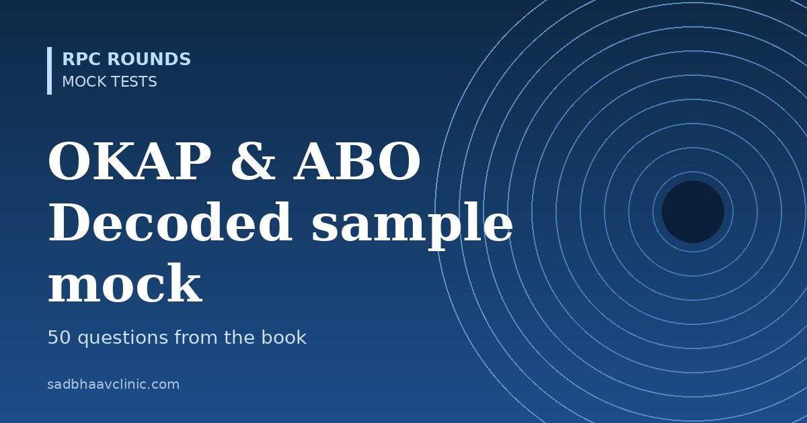

OKAP and ABO Decoded Free Sample Mock: 50 Board-Style Questions from the Book
For: PG residents
Last updated: November 2026
A free 50-question mock taken from OKAP & ABO Decoded, the OKAP and ABO Written Qualifying Examination question bank by Dr Dhaval Patel. It uses questions from the book's Mock Examination 1: 25 from Paper 1 (optics to oculofacial plastics) and 25 from Paper 2 (cornea to general medicine).
- Format: four options, single best answer, 50 minutes (about 1 minute per question, as in the book's full papers).
- Results by chapter, so you can see which topics to revisit.
- After each answer: the explanation, why the other options are wrong, and a one-line pearl, exactly as in the book.

Want all 3,721 questions?
OKAP & ABO Decoded by Dr Dhaval Patel: 3,001 topic questions in 14 chapters and 4 full mock examinations, every option explained with a "why not" and a pearl.
After the test
The full book has 4 complete mock examinations (720 questions) plus 3,001 topic questions. See OKAP & ABO Decoded and the Decoded series.
More free mocks: all mock tests.
📘 Want more exam-ready material? See Most Commons in Ophthalmology on Kindle, or browse all my books.
How to cite this page
Patel D. OKAP and ABO Decoded Free Sample Mock: 50 Board-Style Questions from the Book. RPC Rounds (Sadbhaav Eye Clinic). Updated November 2026. Available at: https://www.sadbhaavclinic.com/okap-abo-decoded-sample-mock-test.html. Accessed [date].
Looking for an eye specialist in Ahmedabad? Learn about our Eye Department or book a consultation with Dr. Dhaval Patel.